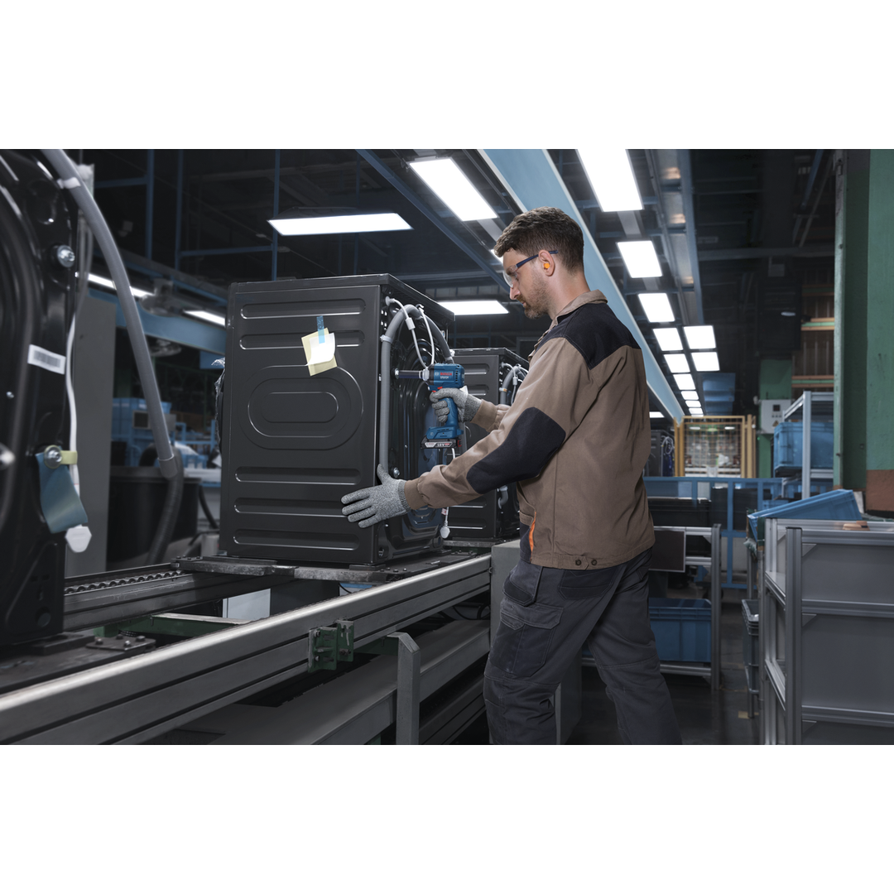
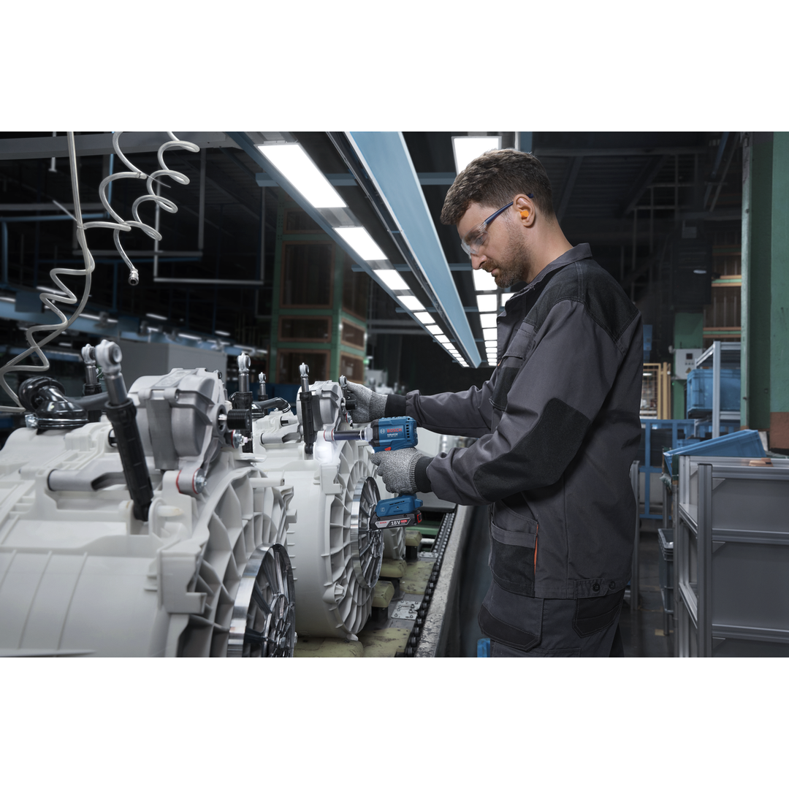
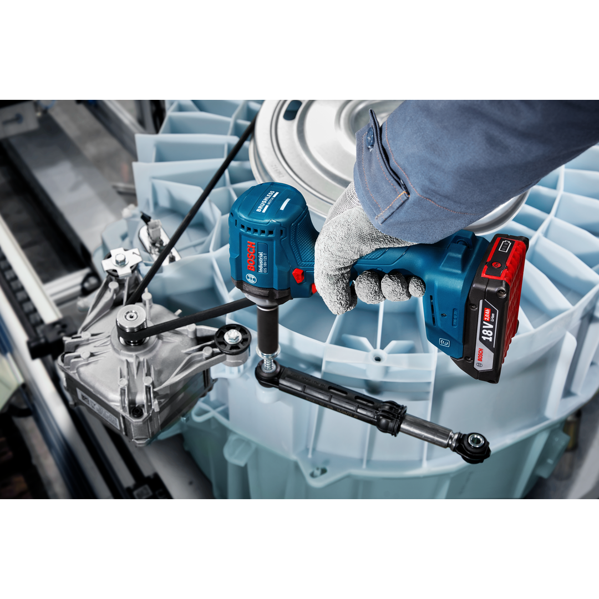
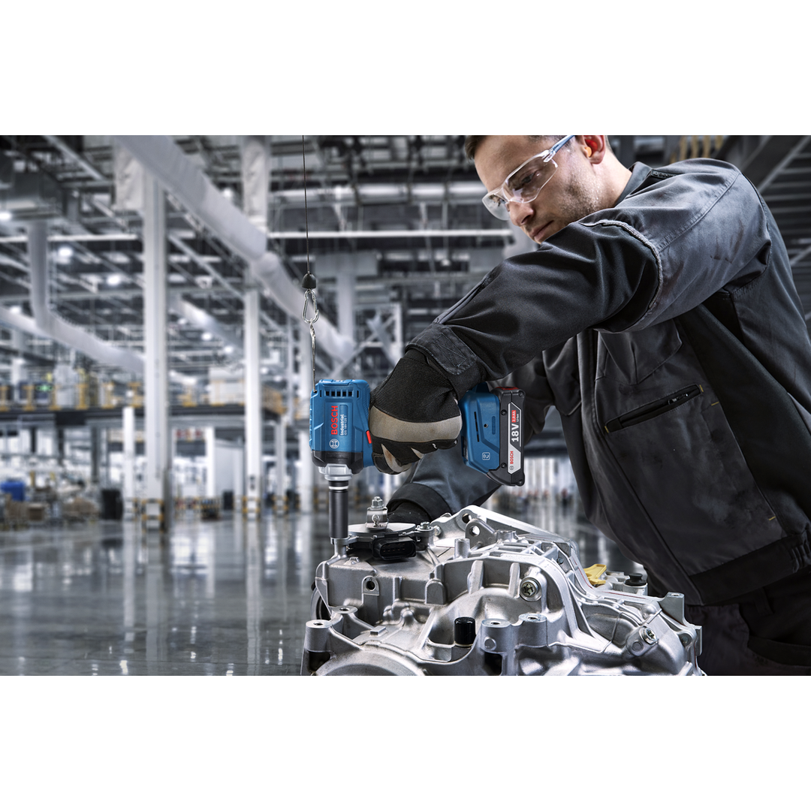
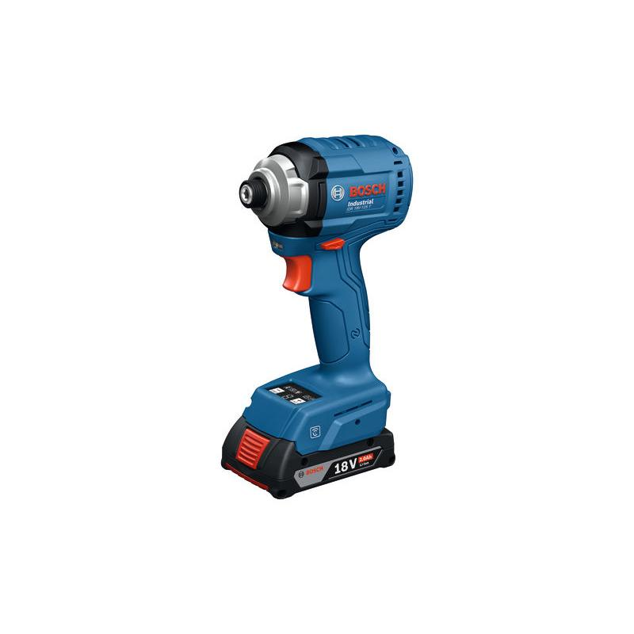
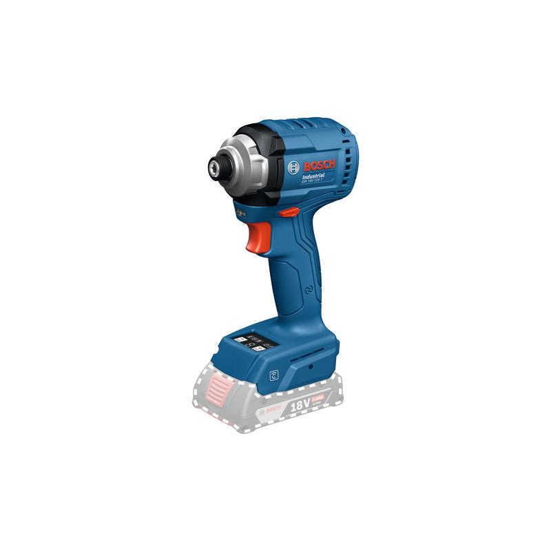

06019P8100






| Torque, from (hard) |
5 Nm |
| Torque, to (hard) |
70 Nm |
| Torque (hard) |
5 – 70 Nm |
| Speed, from |
0 rpm |
| Speed, up to |
3,100 rpm |
| Speed |
0 – 3,100 rpm |
| Direction of rotation |
R/L |
| Weight |
1.100 kg |
| Bit holder |
1/4'' Hex Uni |
| Battery |
GBA 18V |
| Drive type |
Battery |
| Design |
Pistol |
| Adjustable speed | ✓ |
| Brushless motor | ✓ |
| Connector type |
Impact mechanism |
| Comment |
If you’re looking for a high-performance, industrial-strength impact driver that pre and fine tightens with a stable and consistent output torque, look no further than the Bosch Industrial IDR 18V-125 T. This time-saving tool accelerates your work pace and improves efficiency and tightening quality thanks to an auto-shut-off function that stops when the nut is tightened. What’s more, it has an LED torque indicator and a buzzer that shows if the correct torque has been delivered. Designed for long hours of assembly-line use, this driver is built to last thanks to its durable gearbox housing and robust trigger switch. An added plus is the NFC connectivity function, which permits only authorized people to change tool settings and provides tool usage data via an App, such as how many bolts the tool has assembled. |
| Push start | ✓ |
Industrial impact driver with consistent, pre-selectable output torque